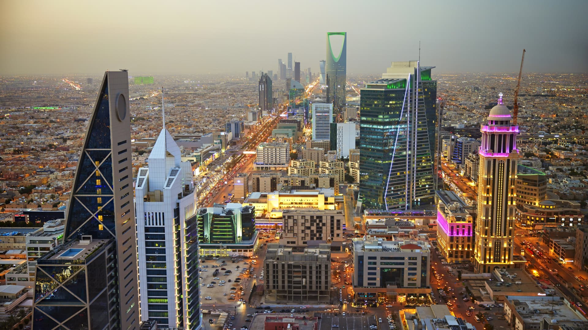

المملكة العربية السعودية 🇸🇦

نبذة
المملكة العربية السعودية هي أكبر دولة في شبه الجزيرة العربية، وتعد مهد الإسلام حيث تقع فيها أقدس مدينتين
للمسلمين: مكة المكرمة والمدينة المنورة.
معلومات أساسية
- العاصمة: الرياض 🏙️
- اللغة الرسمية: العربية 🗣️
- العملة: الريال السعودي (SAR) 💰
- النظام: ملكي 🏰
- الحاكم الحالي: الملك سلمان بن عبد العزيز آل سعود، وولي العهد الأمير محمد بن سلمان
الاقتصاد
تعتبر السعودية من أكبر منتجي النفط في العالم، حيث تمتلك أكبر احتياطي نفطي، وتعد شركة
أرامكو السعودية من أكبر شركات النفط عالميًا.
تعمل المملكة ضمن رؤية 2030 لتقليل الاعتماد على النفط وتعزيز التنوع الاقتصادي.
أهم المدن
- مكة المكرمة: تضم الكعبة المشرفة، قبلة المسلمين 🕋
- المدينة المنورة: يوجد فيها المسجد النبوي وقبر النبي محمد ﷺ 🕌
- جدة: مدينة ساحلية وميناء رئيسي على البحر الأحمر
- الدمام: مركز اقتصادي مهم في المنطقة الشرقية
أهم المعالم
- الحرم المكي 🕋
- المسجد النبوي 🕌
- برج المملكة وبرج الفيصلية في الرياض 🏙️
- مدائن صالح 🏛️ (موقع أثري يعود لحضارة الأنباط)
- مشروع نيوم 🌍 (مدينة مستقبلية بتقنيات متقدمة)
الثقافة والمجتمع
يشتهر المطبخ السعودي بأطباق مثل الكبسة والمندي 🍛
تفتخر السعودية بتراثها البدوي والفنون التقليدية مثل العرضة النجدية 🏜️
يشهد القطاع السياحي تطورًا ملحوظًا مع مشاريع مثل القدية والبحر الأحمر ونيوم.